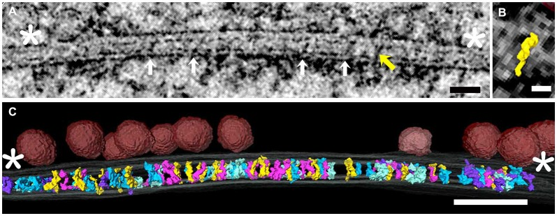

Current member resources
A lightweight landing page for onboarding, reference links, and the evolving digital lab handbook.
Start here
Weekly rhythm
Lab syncs on Tuesdays. Share updates in the shared workspace by Monday evening.
Onboarding checklist
Accounts: lab email, data storage, analysis repos, and imaging schedulers.
First-week goals
Read the lab overview, review ongoing projects, and schedule a one-on-one onboarding meeting.
Research resources
What we're looking at
A representative tomographic view from the literature, for shared reference.

Cleft-spanning elements segmented from electron tomograms (open access).
Digital laboratory handbook
This handbook will cover expectations, workflows, data management, and project communication. Placeholder
for now — add content when ready.
Handbook draft (placeholder)